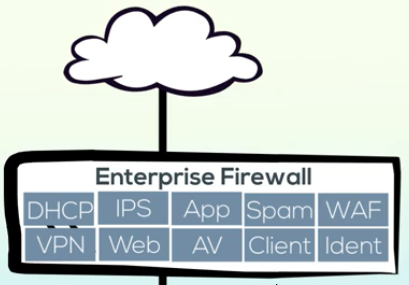

Packet filter firewalls:
- Act by examining the source and destination network addresses, the protocol and the port numbers.
- One Size Fits all(deciding whether or not to allow traffic to pass)
- Need more visibility into traffic
- need to watch connections
Second Gerenation Firewalls:
- Observer Network Connections
over time and continuously examined conversations between endpoints
Como muitos sites com diferentes propostas utilizam o HTTP, é muito dificil distinguir entre que tipo de site está sendo usado e para dizer qual a diferença é necessário fazer uma análise muito profunda para bloquear os maliciosos.
Third Generation Firewalls:
- Examina as cargas uteis de dados dos usos diferentes do mesmo tipo de protocolo, chamado de filtragem da camada de aplicação.
- Diferenciando assim trafego do navegador para um blog ou para um de e-commerce por exemplo.
Unified threat manager firewall (UTM Firewall) Next generation firewalls:

FortiGate Next Geeration Firewalls: FortiGuard Labs Threat Intelligence: